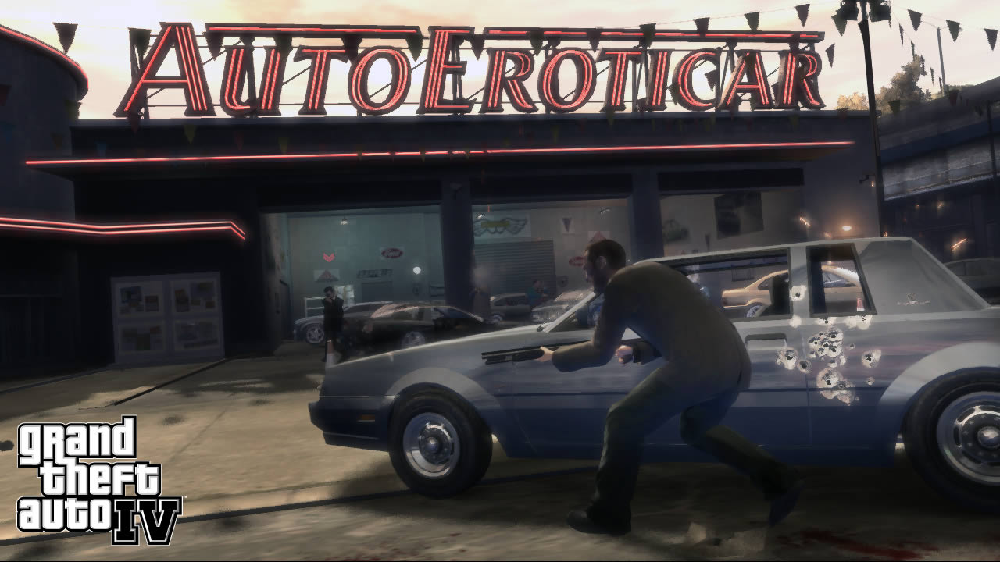
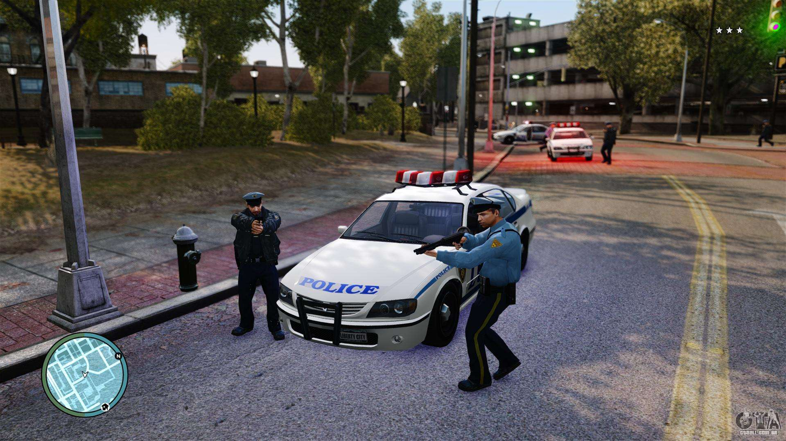

Este site você irá expandir seu conhecimento sobre a franquia GTA, e desta vez falarei sobre o GTA IV o penúltimo jogo a ser lançado até o dia de hoje.
Ele foi lançado para PS3 e Xbox 360 pela primeira vez em 29 de abril de 2008 e apenas em 02 de dezembro de 2008 para Microsoft Windows. O jogo se passa na cidade ficcional de Liberty City, com a história um jogador seguindo o imigrante Niko Bellic e suas tentativas de fugir do passado apesar da pressão de agiotas e criminosos. O mundo aberto permite que os jogadores naveguem livremente pelas três ilhas que formam a cidade.
Assim como no GTA SanAndreas, o jogo se passa em um modo de terceira pessoa em que o jogador controla um personagem que pode adquirir armas, carros, dinheiro, casas e etc. Deixando a livre e espontânea vontade para fazer o que quiser dentro do game.
O personagem que o jogador controla se chama Niko Bellic e sua campanha é feita a partir de apenas um jogador, com as missões contendo muita direção ao volante e muita mira para acertar os inimigos com sua arma.
Segue abaixo uma imagem sobre o jogo:

Muitos jogadores dão risada da física
do game, pois, caso você está andando de moto e bate, você voa da moto
de forma extremamente exagerada, e isso ocorre também em missões, fazendo com que jogadores muitas vezes fique voando
e acaba morrendo no decorrer da missão.
Ele foi aclamado pela crítica, com elogios sendo direcionados particularmente para sua narrativa e projeto de mundo aberto. Entretanto, o jogo gerou algumas controvérsias sobre sua representação da violência e a possibilidade de se dirigir embriagado. Ele quebrou recordes de vendas da indústria e tornou-se o produto de entretenimento mais rapidamente vendido na história, arrecadando 310 milhões de dólares em um dia e quinhentos milhões em uma semana. Grand Theft Auto IV também recebeu vários prêmios de Jogo do Ano.
Jogabilidade:
Os jogadores podem usar ataques corpo-a-corpo, armas de fogo e explosivos a fim de combaterem inimigos, tendo a capacidade de navegar pelo mundo a pé, nadando ou por meio de automóveis, barcos e helicópteros. Sistemas de mira automática e cobertura podem ser usados a fim de ajudarem no combate contra oponentes. Caso os jogadores tomem dano, sua vitalidade pode ser restaurada completamente usando caixas de primeiros socorros, ingerindo comida ou bebida ou ligando para paramédicos. Caso o jogador cometa crimes a polícia do jogo vem para prende-lo ou mata-lo, sendo composta por 5 niveís ou estrelas.

A seguir a demonstração da polícia no game:
